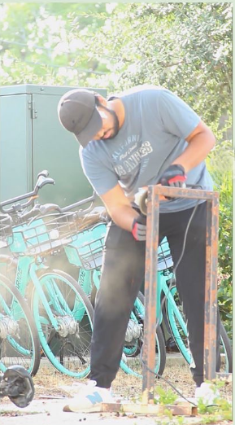
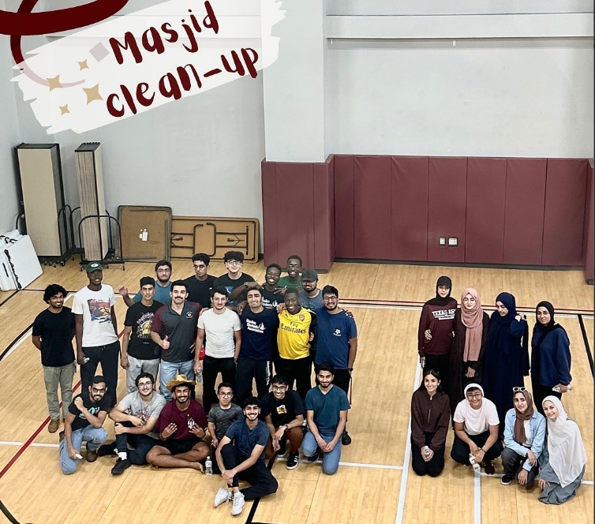

Community Involvement
-
Mosque Clean-Up
The Islamic Center of Bryan College Station is the only mosque near campus. I participated in a clean-up event near the start of Fall semester to help create a more welcoming environment for new Muslim Aggies. The pictures below are me derusting a bike rack and a group picture of everyone involved. The post and the TAMU MSA Instagram is at TAMU MSA.
Volunteer Experience
-
Mamie George Catholic Charities Rosenberg - Food Distribution
Volunteered over 20 hours at a food distribution center during the COVID-19 pandemic to help hundreds of families receive necessary groceries. More about this organization at Mamie George Catholic Charities.
Mosque Clean-Up

